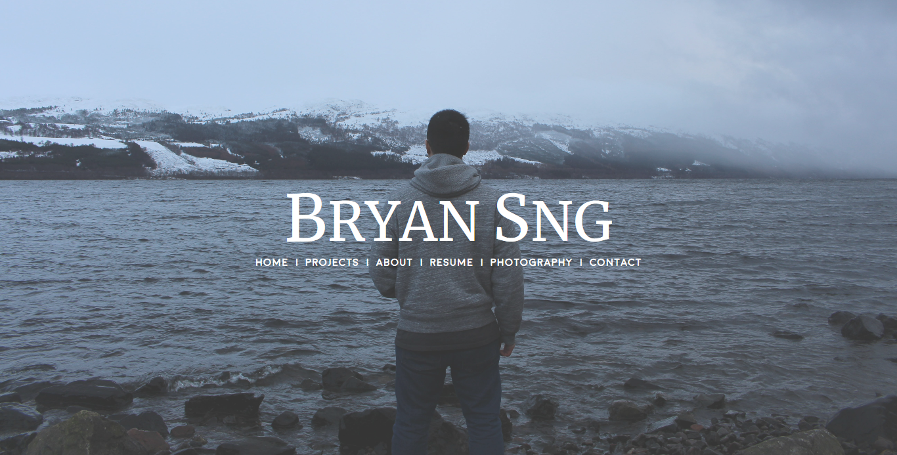
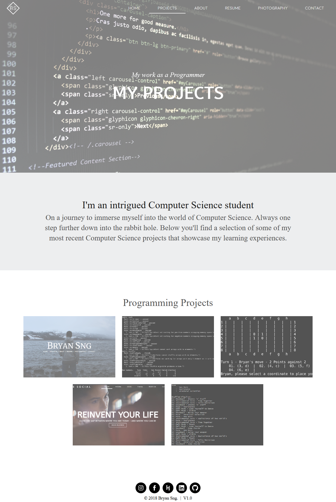
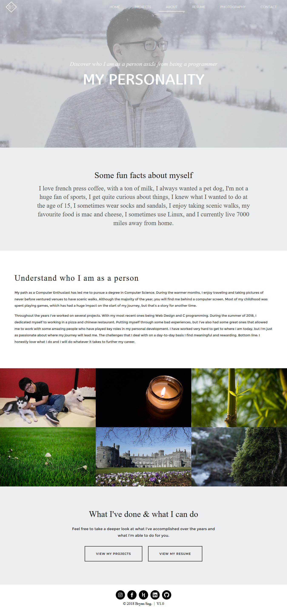
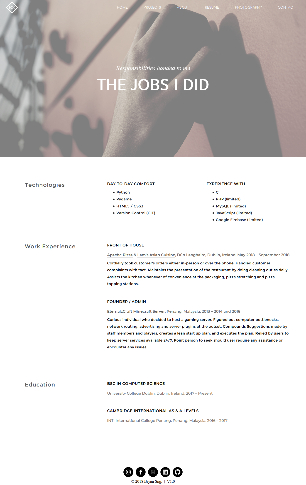
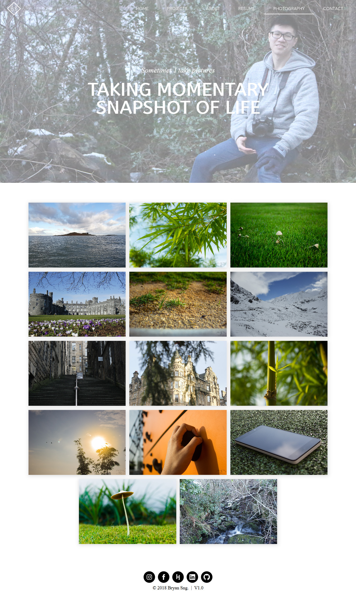
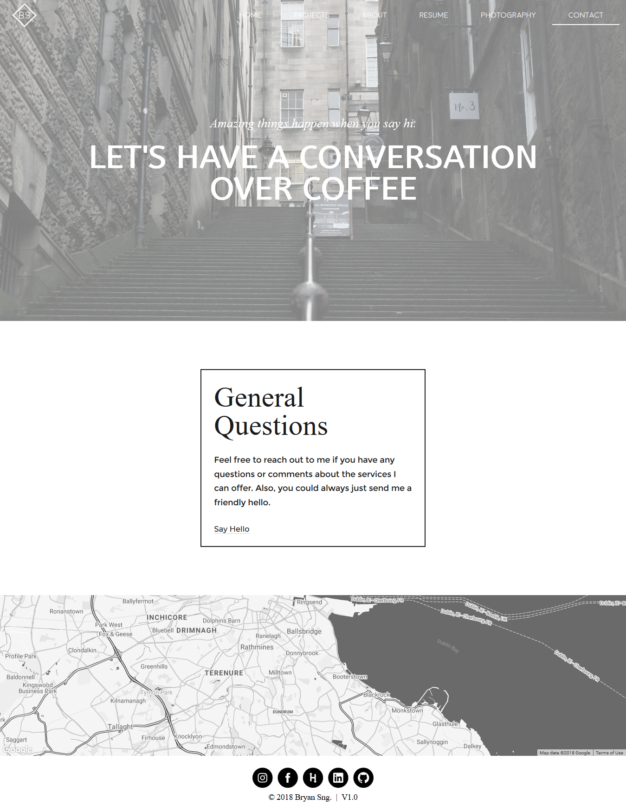

---
---
<!DOCTYPE html>
<html lang="en">
	
	<head>
		{% include global_resources.html %}
		
		<link rel="stylesheet" type="text/css" href="../shared_css/project_details.css"/>
		<link rel="stylesheet" type="text/css" href="css/own_project_details.css"/>
		
		<title>The Social</title>
	</head>
	
	<body>
		{% include header.html %}
		
		<!-- Above the Fold -->
		<div class="intro_container">
			<div class="intro_content">
				<h1>Bryan Sng</h1>
				<h2>A personal website, aimed to facilitate the function of a resume or CV, with ease of contact and further elaboration of work.</h2>
			</div>
		</div>
		
		<div class="img_wrapper">
			
		</div>
		
		<div class="content_container">
			<div class="middle">
				<div class="homepage">
					
				</div>
				<div class="pages">
					<div class="page">
						<h4>Projects</h4>
						
					</div>
					<div class="page">
						<h4>About</h4>
						
					</div>
					<div class="page">
						<h4>Resume</h4>
						
					</div>
					<div class="page">
						<h4>Photography</h4>
						
					</div>
					<div class="page">
						<h4>Contact</h4>
						
					</div>
				</div>
			</div>
			<div class="end">
				<h3>Fun Facts</h3>
				<ul>
					<li>Google Firebase is used as the backend.</li>
					<li>Blog and Musings was planned, and might be added in the future.</li>
					<li>Footer Icons were created using SVGs.</li>
					<li>Website was built using Plain HTML, CSS and Javascript with some Google Firebase code.</li>
				</ul>
			</div>
		</div>
		
		{% include footer.html %}
	</body>
	
</html>